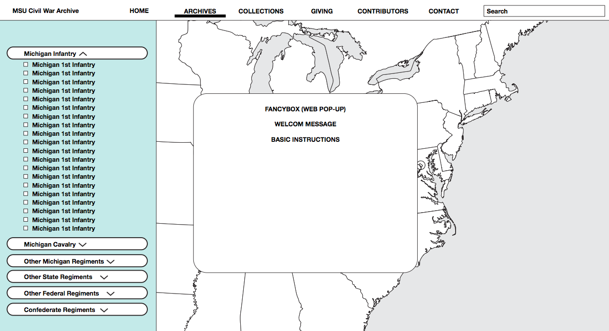
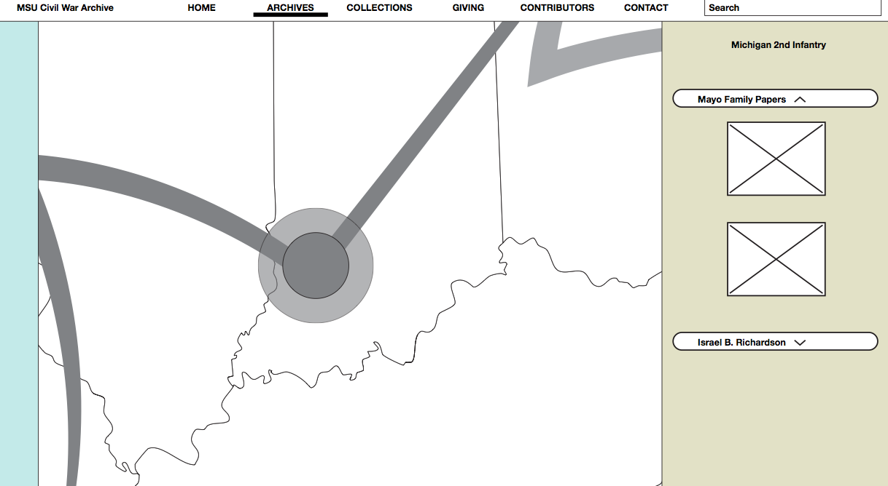
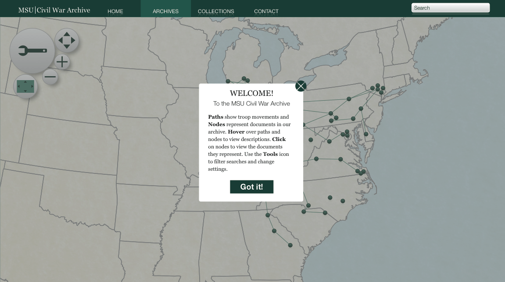
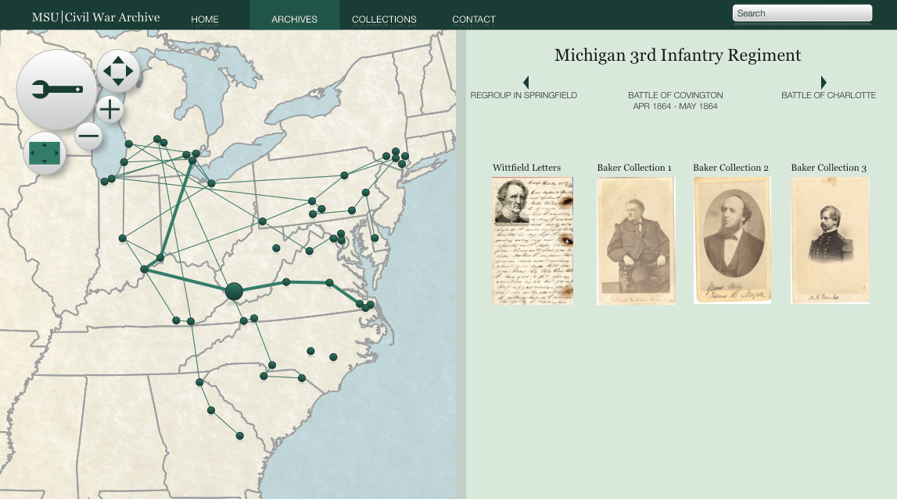
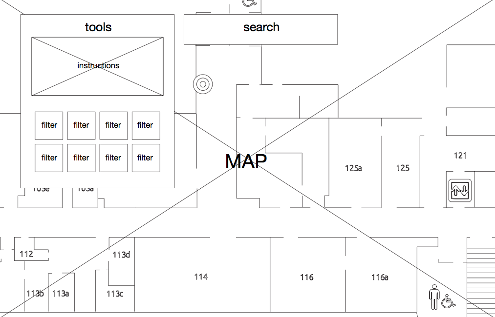
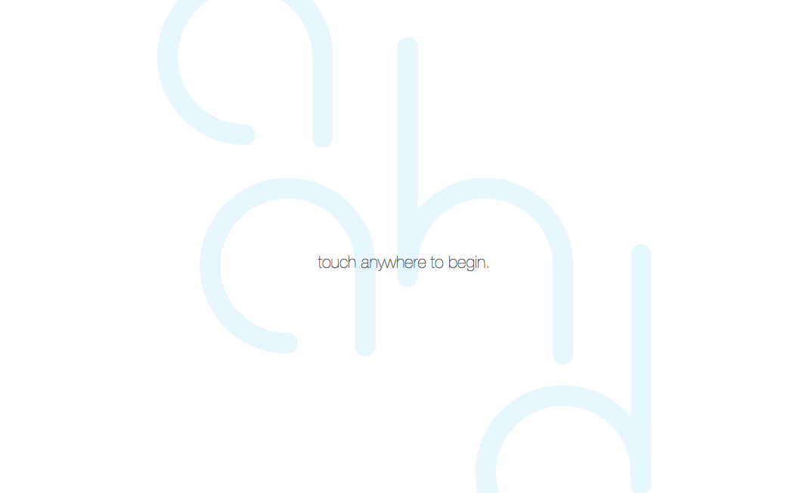
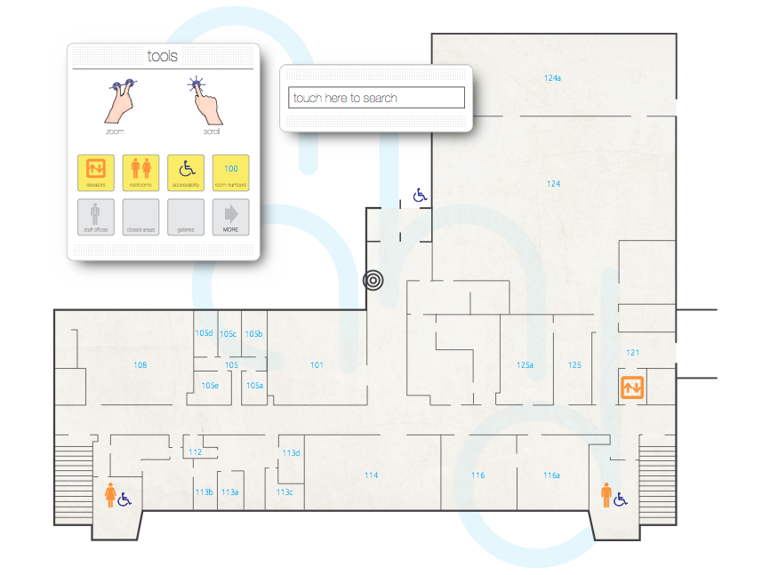
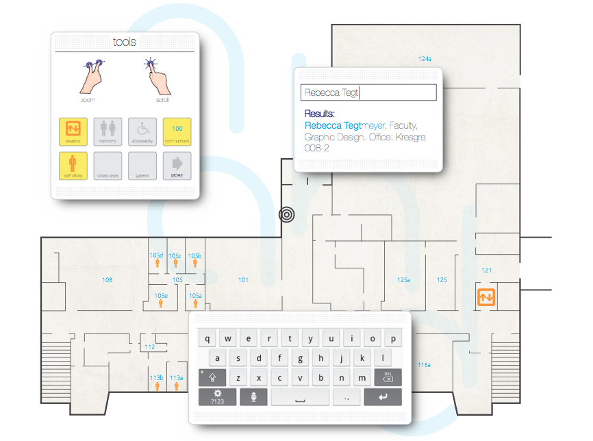

Born & Raised.
© 2014 | this website is 100%, lovingly hand-coded by Chris Jefferies
The site starts a little weak, with visual and usability problems that need solving.
 Once some context is established by way of user personas, the wireframes take shape (group work).
 The challenge is to design an interactive experience for visitors to Michigan State's Kresge Art Center.
Initial wireframes were done by hand. Later, these were rendered digitally as visual hierarchy and usability problems had been solved.
  
Born & Raised.
© 2014 | this website is 100%, lovingly hand-coded by Chris Jefferies